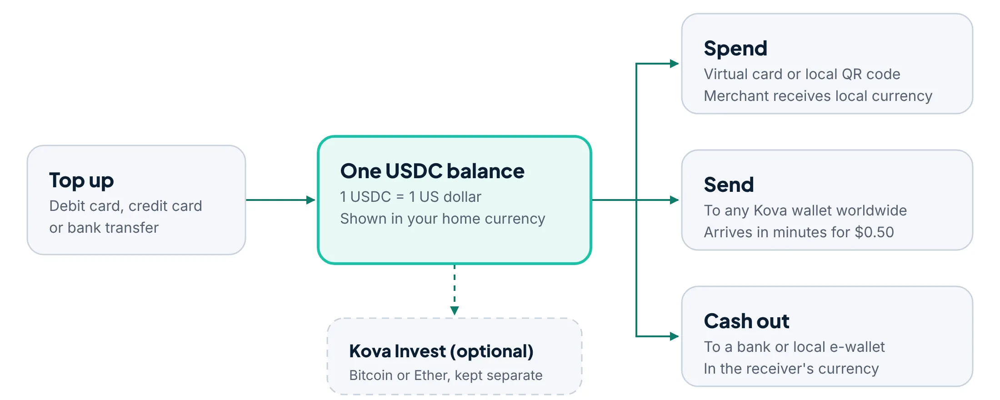

Maria, nurse in Dubai
Worker abroad
Today
Sends part of every paycheck to her mother in Cebu. Fees and rate markups used to cost her about $27 on every $500.
With Kova
The money arrives in minutes, and her mother cashes out to her local e-wallet.
About Kova
The people who move money across borders most often tend to pay the most to do it. Kova started with one question: why should money lose part of itself every time it crosses a border?
Target customers
Three groups whose money regularly crosses a border, wherever they live.
Worker abroad
Today
Sends part of every paycheck to her mother in Cebu. Fees and rate markups used to cost her about $27 on every $500.
With Kova
The money arrives in minutes, and her mother cashes out to her local e-wallet.
Remote freelancer
Today
Clients in the US and UK pay him in dollars, but platform fees and conversion spreads eat into every invoice.
With Kova
Clients pay in USDC. He keeps his earnings in dollars and converts only when he needs rupees.
Traveler
Today
Backpacking Southeast Asia for three months, she pays a fee on every card purchase abroad.
With Kova
She scans local QR codes, sees the price in euros before paying, and skips the airport exchange counter.
Personas are fictional and used for illustration.
The technology
A stablecoin is a digital token built to hold a steady value, usually 1 US dollar, backed by reserves of cash and cash equivalents. Bitcoin and Ether are useful investments, but their prices move too much for paying a bill.

| Question | USDC (stablecoin) | Bitcoin or Ether |
|---|---|---|
| Price on a typical day | Stays near $1 | Can move several percent |
| What you pay at checkout | Known before you tap | Could change before the payment settles |
| Role in Kova | Everyday balance for spending, sending and saving | Optional investing in Kova Invest |
Pricing
Kova earns from small fees you see up front, never from a hidden exchange-rate markup. All prices are fictional.
| Action | Kova fee |
|---|---|
| Top up by bank transfer | Free |
| Top up by card | Card processing cost, passed through and shown before you confirm |
| Convert between USDC and local currency | 0.5% |
| Send to another Kova wallet | $0.50 flat |
| Pay by virtual card or QR code | No extra fee; the 0.5% conversion applies |
| Cash out to a bank or e-wallet | Free; the 0.5% conversion applies |
| Buy or sell in Kova Invest | 1% |
Trust
Kova is a concept, but a real launch would have to meet the same rules as any money service. Here is what that would take.
Note: The BSP has paused new VASP licenses for an indefinite period, so a real Philippine launch would have to work through an already-licensed provider.
FAQ
No. It's a fictional concept made for a university class.
No. Kova converts at checkout, so the merchant receives its local currency.
Stablecoins can briefly trade below their peg during a market shock. Kova would warn users and pause conversions until the price recovered.
Yes, in the optional Kova Invest tab. Payments always come from your USDC balance.
In any market where it holds a license. The five QR systems show the first regions it was designed for.
Further reading